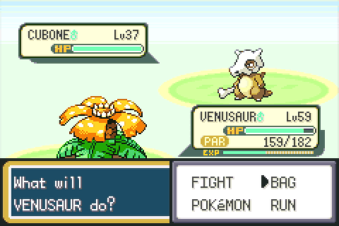
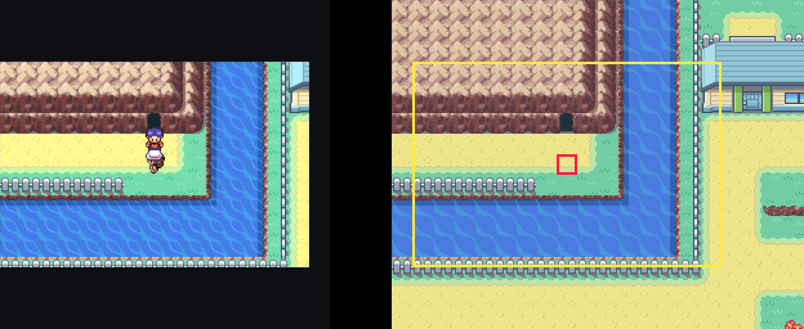
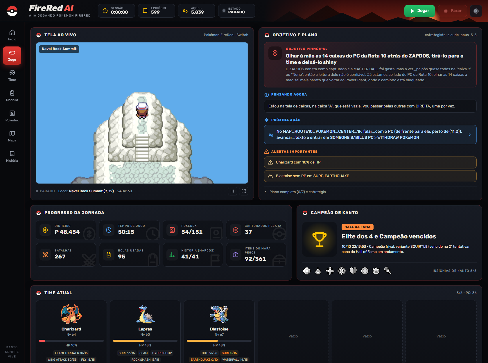
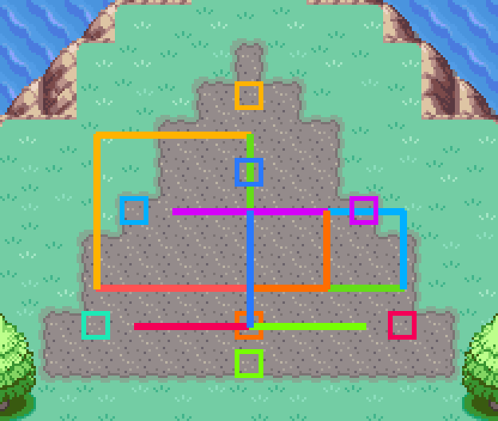
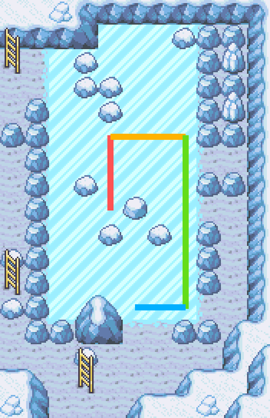
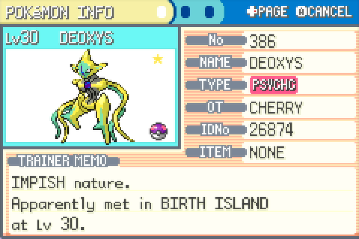
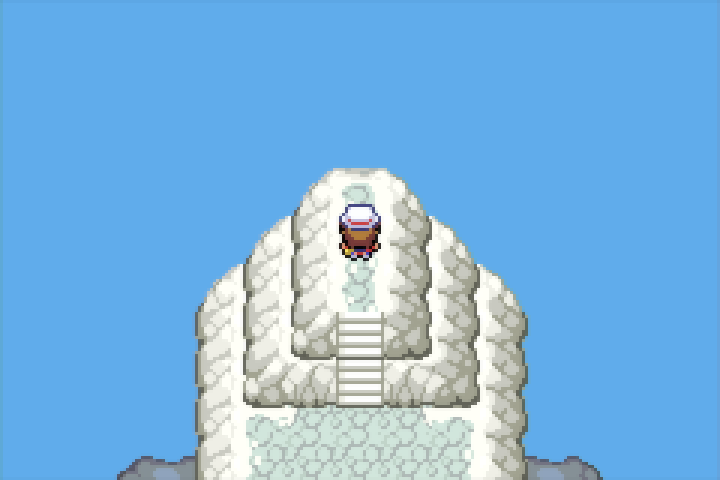
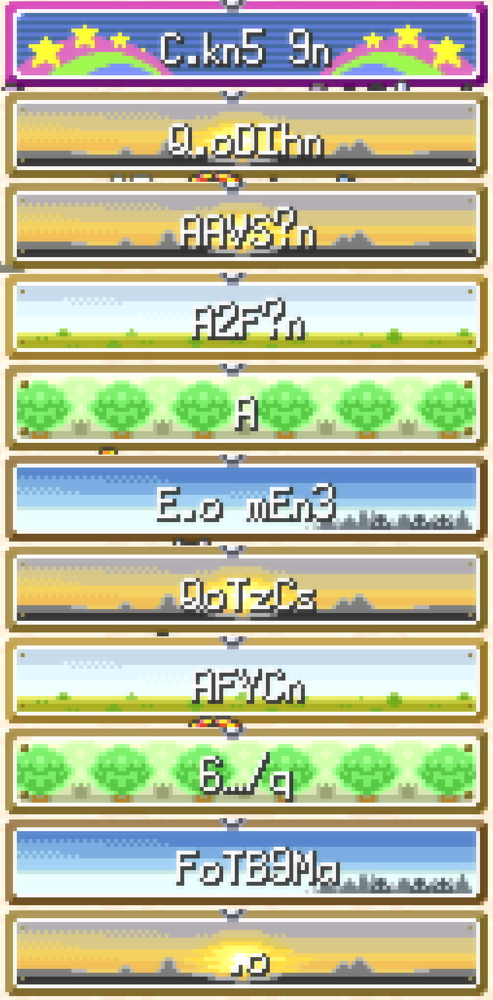

It sees the game through a capture card and plays with an emulated Bluetooth controller. A language model plans; deterministic code walks, battles and reads every pixel. Below, the whole campaign replayed from its own diary.

Every point is a real event from the agent's log: where it stood, what it decided, the team it carried. Drag the timeline or press play; the markers jump to badges, story milestones and captures. The agent's own notes are shown as it wrote them, in Portuguese.
The only sensor is the 240×160 picture and the only output is a controller. Everything else is reconstructed from the game's own decompiled source.
The frame is matched against every map rendered from the pret/pokefirered decomp to get the exact tile; text is read with the game's own font; species are recognised by sprite.
fireredia.percepcaoPath finding across the whole world (doors, ledges, Surf, Strength, ice) runs closed-loop, checked frame by frame. Wild and trainer battles, menus and the PC run without the model.
fireredia.habilidadesA strategist model writes the plan; an executor plays it through ~60 tools. Memory is an append-only log, so every episode starts small and nothing is forgotten.
fireredia.agente

After the Champion, scripted missions and arbitrary code execution (code typed into PC box names through the Mail glitch) caught and recoloured them. Every trigger saves first and checks the boxes on screen.





Bluetooth drops button presses, mostly during animations. Every multi-step action checks the screen before it commits: battle cursor, PC panel, keyboard page and cursor.
Scripts swap metatiles and flags hide NPCs. The navigator models script-opened doors and takes the list of NPCs the story already moved.
Leaving Surf only works onto elevation 3 (CanStopSurfing); ice slides until it hits something; the Deoxys triangle has a step budget. Each rule became code and a test.
36 tests run without a console: planning on synthetic grids, navigation on the real decomp maps, perception on frames captured from the Switch. CI runs them on Windows.